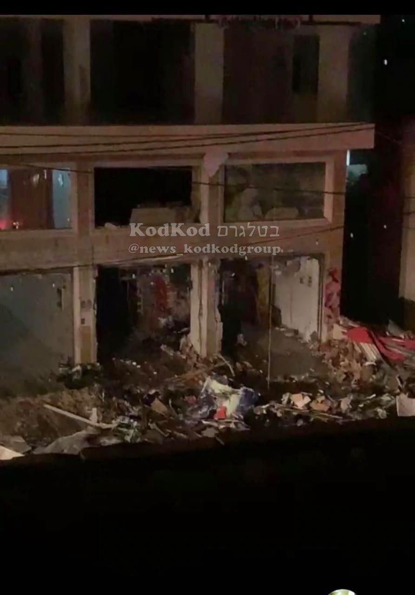

Uma pizzaria na cidade palestina de Huwara, na Cisjordânia, achou que seria engraçado criar um anúncio de pizza usando a imagem de uma sobrevivente israelense do Holocausto que foi capturada pelo Hamas durante o recente ataque surpresa e atualmente está sendo mantido como refém em Gaza.

O exército israelense aparentemente não achou engraçado e apareceram para prender os proprietários e destruir o restaurante usando escavadeiras.
Entre em nosso canal:
do Front para o Mundo